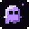
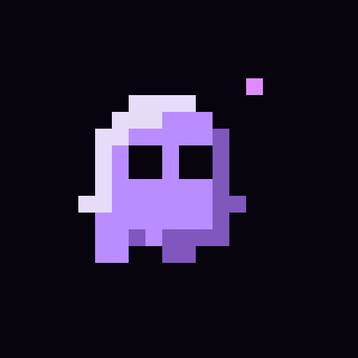
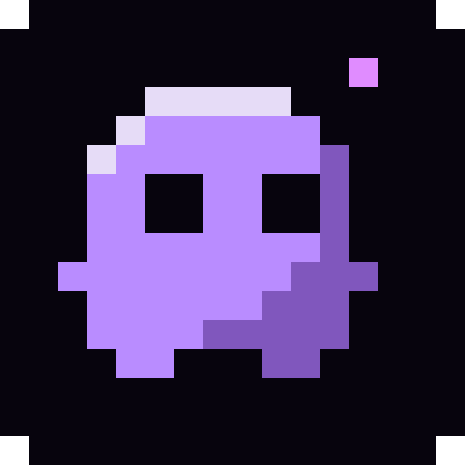
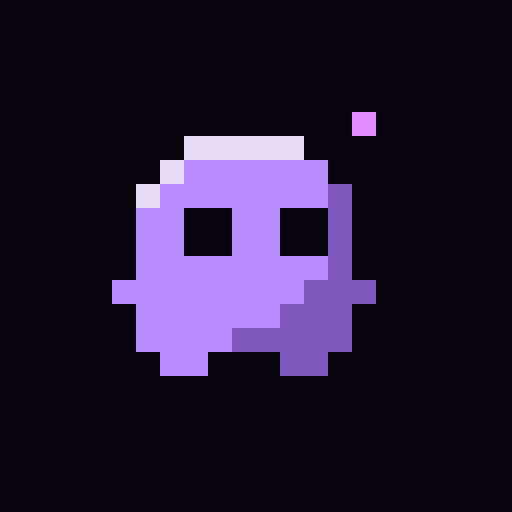
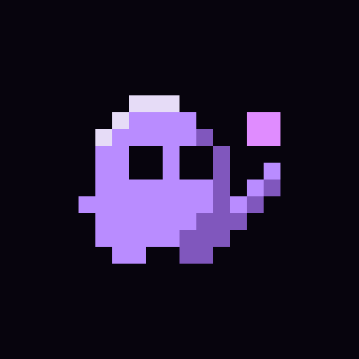
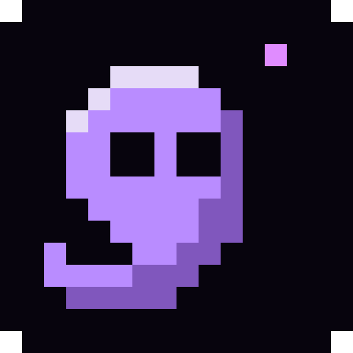
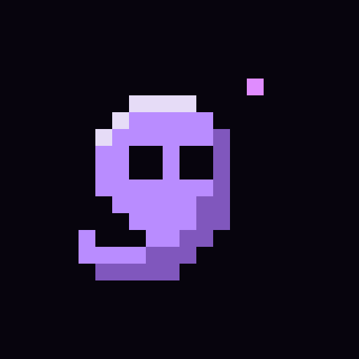

C0ROUND ONE

Original sprite
The starting point: a small purple companion, wide eyes, and a floating pink pixel.
32 px

48 px
app cropReference. The heavy highlight and uneven feet make it feel a little unfinished.
Three evolutions of C: simpler, more purposeful, or more expressive.
The starting point: a small purple companion, wide eyes, and a floating pink pixel.

48 px
app cropReference. The heavy highlight and uneven feet make it feel a little unfinished.

A wider, softer body with balanced eyes and little feet. A clean refinement of the original.

app cropThe easiest face to read at 16 px. Friendly, but still close to a classic ghost.

A little sprite reaching toward a pink pixel. Its pose connects the character to making art.

app cropMy pick: a mascot with a purpose. The reaching arm is subtle at favicon size.

A floating sprite with a curled tail and an offset spark. A more distinctive silhouette.

app cropMost expressive shape; leans into the magical meaning of “sprite.”